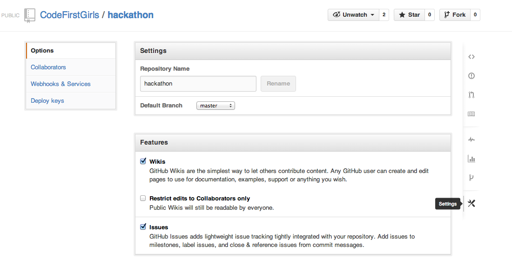

A short taster session into the fundamental technologies powering the world wide web.
Collaboration using GitHub
So far we've recapped how to send code to GitHub using Git Push, but we can also pull code down from GitHub using Git Pull.
You should be able to follow these instructions if you're using SourceTree or the git command line.
Adding collaborators
You'll need the GitHub usernames of your team to give them push/pull rights to your repository.
First, open the settings of your GitHub repository.

Then select collaborators and add the usernames of each of your team mates into the box.
Github collaboration
There are a few options for collaborating with others using Git.
One-way sharing
As we all know, one-way sharing isn’t really sharing at all. Even so, this is the easiest example to look at - in fact we’ve been doing it almost from the first session of the course.
In one-way sharing, there is one ‘master’ repository on GitHub that everyone can read from, but only one person can write to:
Forking
One of the options for sharing your changes with me, is for you to publish your repository too. I can then pull your changes down just as you pulled mine.
Notice that this situation is symmetric - my repositories are equivalent to yours. This makes it a suitable model for many open source projects, where the project maintainer might change over time.
Github makes this model easy by providing a ‘forking’ button. Forking is a quick an easy way make a copy of my repository on GitHub so that you can then pull and push to it.
Sharing
The other way or collaborating with git is the ‘sharing’ model: one person puts the repository on github and gives other people permissions, so you can all push to the same place.
To do this on github, go to your forked landing page repository and click on ‘Settings’ on the right hand side. Then go to ‘Collaborators’ and add your team members’ github usernames.
You can find out more about these different workflow option from the Git book.
How to collaborate?